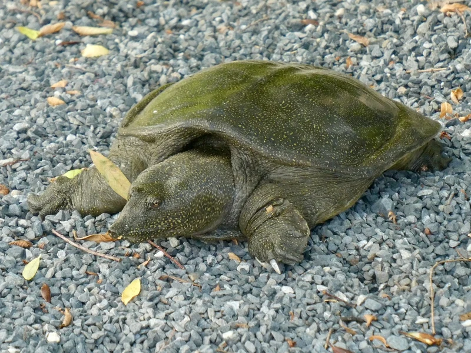

中国・日本（外来）・東南アジアに広く分布するスッポン。食用・薬用として長く利用されてきた。砂底管理と咬傷注意が必要な中上級種。

1年後の甲長は12〜18cm程度。革質の柔らかい甲羅と長い鼻先（管状の鼻）が個性的で、観察するほど独自の生態の面白さが見えてくる。砂底に潜り込んで静止し、通り過ぎる魚などを素早く捕らえるアンブッシュ捕食行動が観察の見どころになる。砂底設置が飼育の第一優先。
10年後は甲長25〜35cm、重さ2〜5kg程度が多い。60〜120cm以上の水槽が必要になる。20〜40年の寿命があり、砂底の確保・革質甲羅の傷防止・強力なろ過という3点が長期飼育の核心になりやすい。
スッポンの革質甲羅は他の亀の硬い甲羅と異なり、石・流木の角や粗い底砂で傷つきやすい傾向がある。傷が入ると感染リスクが高まりやすく、一度傷ついた甲羅の回復には時間がかかりやすい。「観賞用のレイアウトを入れたい」という気持ちを一旦置いて、細かい砂底のみのシンプルな水槽設計を最優先にすることが安定飼育の基本になりやすい。
スッポン（シナスッポン）はChinese Softshell Turtleとして知られる中〜上級者向け種です。特殊な飼育環境が必要です。
砂底フィルターと週1換水で水質を維持してください。
← 横にスクロールできます
| 種名 | 甲長 | 難易度 | 必要環境 | 特徴 |
|---|---|---|---|---|
| スッポン（シナスッポン） このページ | L（25〜35cm） | 中〜上級 | 60〜90cm水槽 | 本種 |
| マタマタ | 35〜45cm | 上級 | 90cm〜 | 特殊捕食 |
| スジオオニオイガメ | 30〜40cm | 上級 | 90cm〜 | 大型水棲 |
| アジアコガシラドロガメ | 16〜20cm | 中〜上級 | 60cm〜 | CITES II |